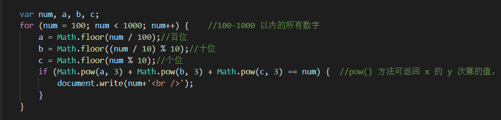
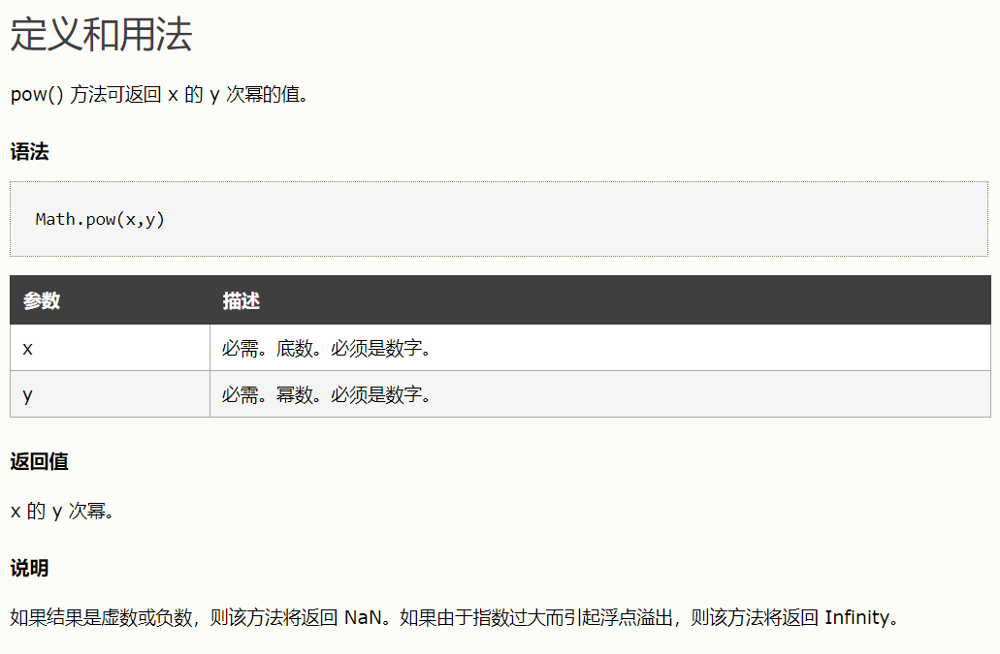

什么是水仙花数
水仙花数（Narcissistic number）也被称为超完全数字不变数（pluperfect digital invariant, PPDI）、自恋数、自幂数、阿姆斯壮数或阿姆斯特朗数（Armstrong number）；
水仙花数是指一个 3 位数，它的每个位上的数字的 3次幂之和等于它本身（例如：1^3 + 5^3+ 3^3 = 153）。
怎么输出1000以内的水仙花数
我们已经知道水仙花数的规律 a^3 + b^3+ c^3 = abc，那么，用js代码怎么把1000以内的水仙花数输出呢。
直接上代码：

这里用到了js的一个方法 pow()
